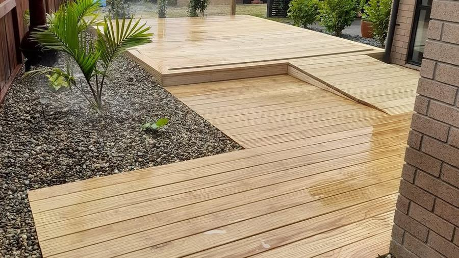
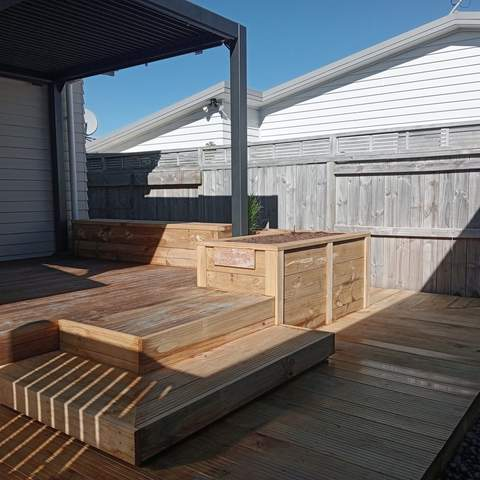
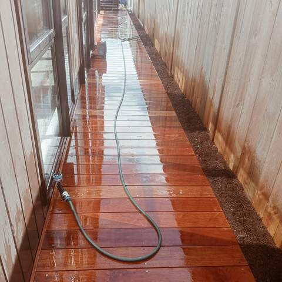
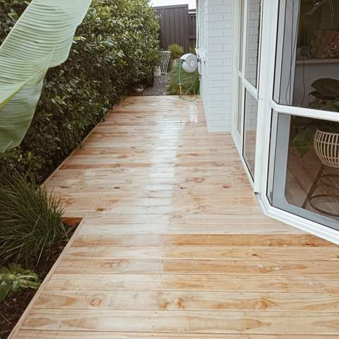

Our work
Recent Landscaping Projects Around Tauranga
Decks, retaining walls, fences, lawns and gardens, photographed on Matt's own jobs. Tap any photo to see it larger.
Project photos
41 photos
Pine deck with a step-down level beside a gravel garden bed with young palm 
Side garden with lawn, curved concrete edging, bark mulch beds and established shrubs 
Curved low hedge bordering a planted garden bed with Japanese maple beside a driveway 
Newly laid lawn being watered by a sprinkler next to a hardwood deck 
Timber retaining planter beds around a lawn and concrete patio 
Timber retaining wall with planting above, new lawn and paved patio 
Deck with raised timber planter box under a black pergola 
Front garden with clipped hedge and red-leaf shrubs in front of a house 
Concrete patio with round table, lawn and timber planter beds along the fence 
New timber retaining wall with fresh lawn and planted bed above 
Pine deck with built-in steps under a pergola 
Deck with steps and timber planter boxes along a fence line 
Deck steps and timber planter with grasses under a pergola 
Timber boardwalk path alongside a raised timber planter bed 
Side-of-house boardwalk with long raised timber planter 
Deck with built-in timber planter boxes and step 
Vertical slatted timber screen with steps and gravel garden 
Black feature posts with horizontal rods, planting and gravel strip along a white wall 
Black feature posts, planting and dark path beside a modern house 
Freshly oiled hardwood deck beside a house 
Narrow hardwood deck walkway along the side of a house 
New pine deck surrounded by tropical planting 
Large pine deck in a fenced garden with a spa pool 
Pine deck running along a house beside a garden bed 
Deck with slatted timber screen enclosure 
Pine deck with slatted timber screen 
Stained deck with timber balustrade next to artificial turf 
Timber deck steps leading down to concrete and artificial turf 
Timber retaining edge around a mulched garden bed 
Timber-edged garden bed around a letterbox post 
Pop-up sprinkler watering a narrow lawn strip 
Dark-stained deck with lawn, young tree and garden beds 
Newly oiled hardwood deck with timber bench seating 
Tradesman sitting on a timber bench during a hardwood deck build 
Worker on a new pine deck under construction 
Worker framing a deck beside a house 
Lawn with metal edging, mulched beds, a young tree and a row of standard trees along a fence 
Mini digger excavating soil for a backyard project 
Elevated deck under construction with subframe and view over the city 
Timber posts being set and levelled against a white wall 
Fence construction with posts, rails and wheelbarrows on site


Like what you see?
Tell Matt about your project and get a free, no-obligation quote.